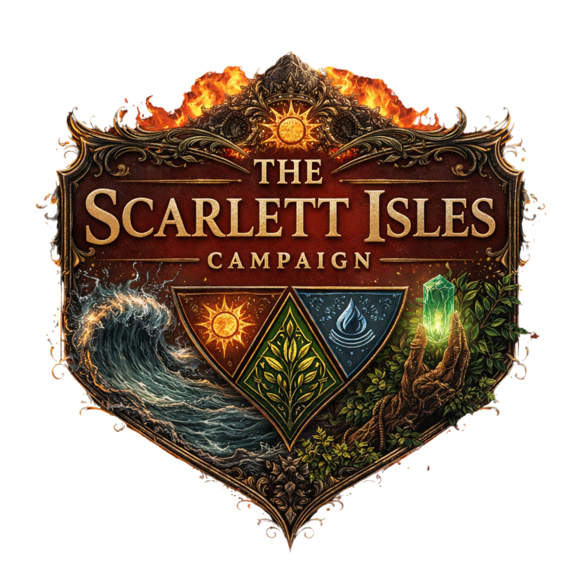

How-to guide
The Scarlett Isles: D&D Tool Suite
How to run the suite at the table: opening it, using your two screens, keeping your saves safe, and each tool in a few lines. Press Ctrl + P to print it.
1. Opening the suite
- Keep the whole suite folder together. Double-click
index.htmland it opens in Edge. It needs no internet and nothing to install. - The home screen shows the nine tools in four groups: DM Tool, World, Players and Set Pieces. Click a card to open its tool.
- Every tool has the same bar along the top:
- the crest on the left takes you back to the home screen;
- Switch tool opens another tool; the ↗ beside a tool opens it in a new Edge window instead, which you can drag to the TV;
- DM doc opens your DM doc, a panel for your eyes only that floats over the tool: drag it by its title bar, resize it from its bottom-right corner, and close it with ✕. It has four panels in a grid; each scrolls by itself when its lists get long, and in a narrow window they stack in one column:
- Party: the party's level, the party's event gold (the Explorer's running total, until you clear it there), the effects that touch the whole party (and a Great Rite the party holds, ready or used), and each hero with that hero's own Active Effects beside their name.
- Bastion: the orders pending (up to five, the one completing next first, each with its day) and the next word from the Ironbow (when, and what it will say).
- Explorer: the day; the expedition (when it began and how many days it has been running, and, once you end it in the Explorer, Expedition ended - Day 4 to Day 9, which stays until the next one starts); where the party is (the Region's Clan with its Political Capital and Honour/Respect, the Region's god with its Favour, and under them any open restriction, privilege, favour, obligation or quest hook the Hall's Diplomatic Records name for that Clan, with the day it ends: these are for you to run at the table, the suite doesn't enforce them); Change a score…; and the Threads (with what resolving each gives). Change a score… sets a Clan's Political Capital (−100 to 100) or Honour/Respect (−5 to 5), or a god's Favour (0 to 100%), to the number you type. The DM doc never writes the Bastion's save itself: it keeps a short list of changes, and the Bastion applies each one once, the next time it is open (straight away if it already is). Under the button each of the last three changes says Waiting until the Bastion has applied it, then Applied or Refused.
- Quest: a box for your own text, such as a session file to read from. Type or paste into it and it saves as you go (the word beside its title says Saved, or Not saved if the browser can't keep it); it holds up to 200,000 characters. It is for your eyes only: it is never sent to the players or to the Beast Handler. Import… reads a PDF, a Word (.docx) or a text (.txt or .md) file into the box; if the box already has text it asks whether to Replace it or Add to the end. A scanned PDF (a picture of each page) has no text to read, and an old .doc file or one with a password can't be opened: paste the text in instead. Save as text file downloads what is in the box, and Clear empties it, but asks first. The text is part of Back up everything and Restore; a backup made before the Quest box existed doesn't hold it, so restoring one empties the box.
- Export and Import (only in tools that save) copy that tool's data to or from a file;
- Saved ✓ shows your work is saved.
- Leaving the Heartwood Ritual, the Pelagosi puzzles or an Arenas round part-way asks first, because they can't be picked up again later.
2. Your two screens
- The TV extends the laptop's screen. Drag a window across, or press Windows + Shift + ← or → to move the window you're in to the other screen.
- F11 makes Edge fill the screen. Press it again to go back.
- Two tools open a window for the players: the Combat Tracker's Battlemap and the Notice Board's Pop-out Board. Drag that window to the TV. It closes when you leave its tool.
- In the Explorer, press Fullscreen, then H (or Hide UI) to show only the map. H again brings the panels back.
- The tools are sized for the laptop at 150% and the TV at 100%. If one looks cut off, check Scale in Windows' Display settings for that screen.
3. Saving and backups
Please read this one. Your saves live inside Edge on this laptop, not in the suite's folder.
- The Combat Tracker, Notice Board, Explorer, Bastion, Arenas and Clan Crest Creator save as you go (the Crest remembers your last design). The Heartwood Ritual and the Pelagosi puzzles save nothing, as before.
- Because saves live in Edge:
- another browser, another computer or an InPrivate window won't see them;
- clearing Edge's browsing data (Cookies and other site data) deletes them, and so does Edge's setting to clear that data whenever Edge closes, if it's switched on;
- every copy of the suite on this laptop shares the same saves. Moving or renaming the folder is fine. But a new version you download to try out opens your real saves too, so back up first.
- Back up everything (on the home screen) puts one file, named
tsi-backup-everything-and the date, in your Downloads folder. Do it after each session, and keep the files somewhere safe, such as OneDrive or a USB stick. - Restore (on the home screen) loads a backup file. It shows what's in the file and asks before replacing anything.
- For one tool, use Export and Import in its top bar. Import asks first, and offers to save a copy of what's there now. The Explorer and the Bastion share one campaign, so their Export and Import carry both together, in one file named
tsi-campaign-and the date. - If a save ever can't be read, the tool sets it aside (it isn't deleted) and starts fresh. Restore a backup, or ask a session to recover the copy that was set aside.
4. The tools at the table
Combat Tracker & VTT Battlemap DM Tool Open ›
Before the session
- Library: fill in Add Combatant (name, type, max HP, and if you like the initiative bonus, a picture and a stat-block link), then Add to Library. Click a saved combatant to select it; Shift + click edits it.
- Select the ones for this fight and press Add Selected. Copies are named Goblin, Goblin a, and so on. If you add more during a fight, it carries on: the round and whose turn it is don't change, and the new arrivals wait at the end of the list (skipped) until you type an initiative in their row and press Enter, or press Roll for new arrivals, which rolls d20 plus their bonus for them alone and slots them into the order. Name the encounter in the middle panel; Encounters › Save Current Encounter keeps it for another night.
- Import/Export: Export Campaign JSON and Import Campaign JSON move your whole library to or from a file. Import PDF (basic) tries to read a name and HP from a PDF.
In the fight
- Auto-roll Initiative, then Begin Encounter.
- On each turn, pick the Target, type the Damage / Healing (12 for damage, −5 to heal), add a condition and its turns if needed, then press Complete Turn.
- Pause and End stop the fight. Begin after a Pause starts again at round 1, as before.
- Hide Monsters hides every monster from the Battlemap (and from you); Reveal Monsters shows them again.
- Battlemap opens the map window. Upload battlemap (up to 4 MB), drag the tokens, and use the grid, Snap, Fog and the ruler (📏). Drag the window to the TV and press Fullscreen.
A fight from the Explorer
- When the Explorer sends a fight, the tracker offers it: Load the fight puts its monsters in the encounter (and the library), and its battle map, grid and starting places on the Battlemap. Your PCs stay; heroes caught by an ambush are marked Surprised for their first turn. Then Auto-roll Initiative and Begin Encounter.
- After Not now, Load the Explorer's fight at the top offers it again.
- When every monster is down, the tracker tells the Explorer, where you press Won.
Notice Board Quest Generator DM Tool Open ›
- Set the filters (level, how many, type, province, faction and honour), then press Generate. The notices appear on the board.
- Each notice has Accept and Decline. Accepted quests move to Accepted Quests, grouped by province, with their outline. ✕ takes one off the list.
- ★ marks the main quest. With Wi-Fi on, it also tells Matt Owen's Knightly Treasures shop which quest is active; offline it skips quietly and catches up next time. Open shop ↗ opens the shop (it needs the internet).
- Pop-out Board opens the players' window. Drag it to the TV; it shows the notices only.
- Clear empties the board.
The Ironbow Bastion Manager DM Tool Open ›
- The Bastion map fills the window. Its top bar shows the day, the treasury (type the gold and press Enter, or click away), how many Facilities are built and how many Orders are pending: hover over either for the list, or click it for its panel. The badge in the map's top-right corner opens Party Identity. Along the bottom, either side of the facility tiles, are buttons: Warehouse, Management and Day Log on the left; Clan Influence and Favour on the right. Each opens its panel over the map; Close (or Esc) closes it. The small arrow above the tiles folds them away to show more of the map. While the tiles are showing, the painting takes on a soft haze and each built facility has a small label with its name and level; folding the tiles away removes both. Party Level, Compendium, Reset and the save buttons are in the slim bar above the map. Reset, and every Clear or Remove that would lose something, ask first; Reset offers to download a copy before it clears. Each upgrade row says what the next level unlocks.
- Along the bottom are the facility tiles, in two rows: the five you start with and six construction slots above, and six Development Plots below (with a sprout). Hover over a tile to see its level and the orders pending there; click it to open its panel. A slot with a + is free: click it, choose a facility (hover over one to see what it does and how many days it takes to build), and confirm with Construct. Building takes 21 to 35 days, and the tile shows an hourglass and the days left; click it if you want to stop building. A padlocked slot opens at a higher party level (its tooltip says which).
- Development Plots are only for the production facilities: the Herbal Gardens, the Timber Yard & Sawmill, the Fishery & Smokehouse, the Stone Quarry & Masonworks, the Weavers' Hall and the Courier Exchange. There are none until party level 9, then 2, 4 at level 13 and 6 at level 17. Click a free plot to build one (21 days); the other facilities still go in the construction slots. An Herbal Gardens built in a slot before plots existed moves to a free plot by itself, keeping its level, orders and research, and the Day Log says so.
- The Stone Quarry & Masonworks and the Weavers' Hall (Level 5, no gold) work like the Timber Yard: one production order at a time, and each level's order replaces the last (see Upgrade below). The quarry extracts Raw Stone at Level 1, then makes Dressed Stone at Level 2, Structural Masonry at Level 3 and Decorative Stonework at Level 4, and at Level 5 offers two bulk orders; the Hall makes Ordinary Textiles at Level 1, Sailcloth at Level 2, Specialist Garments at Level 3 and two lots of Specialist Garments at Level 4, and at Level 5 offers two bulk orders. No order needs anything from the Warehouse: each works on its own, even with the Warehouse empty. Everything they make is trade cargo, counted in lots, to ship from the Dock; none of it goes to the party.
- Goods: the production facilities make goods, such as Raw Timber, Fresh Fish, Restorative Herbs or Expedition Provision Packs. Each order says what it Makes, and an order that needs goods (the Herbal Gardens' recipes) also says what it Uses and how much the Warehouse has. What it uses leaves the Warehouse when you issue it, and the Orders panel shows what it's holding; Cancel (or Demolish) puts it back. The Timber Yard, the Fishery, the Stone Quarry and the Weavers' Hall use nothing: their orders work on their own with an empty Warehouse, and each of them runs one production order at a time. If an order can't be given, its button says "Can't order yet" and the reason is underneath. In the Warehouse, goods have their own rows, showing what one lot holds and their value (the base value per lot; trade goods become gold when a Dock ship sells them: see Port Charters and cargo below). You can change their count and notes; a good that's used up stays at 0 until you Remove it.
- To knock a facility down, open its panel and press Demolish… at the foot (the Hall's is beside Clear Diplomacy Records). It asks first. Its slot (or plot) is freed and any orders pending there are cancelled, with no gold back (goods they were holding go back to the Warehouse); what it already made stays. The two starting facilities, the Workshop and the Dock, can't be demolished.
- Every facility has a level, from 1 to 5, shown at the top of its panel. To raise it, press the Upgrade box's button (it names the next level), the first of its orders (the Hall's Upgrade is beside its level badge). It costs no gold and takes 7, 14, 21 or 28 days to reach Level 2, 3, 4 or 5. It waits under "Orders pending here" like any order (Cancel stops it). One upgrade at a time, and not while the facility is Under Repair. A level opens new orders at the Herbal Gardens (an order that needs a higher level says so on its button), and the Hall's bonus and actions; what other facilities' levels unlock comes later. At the Timber Yard, the Fishery, the Stone Quarry and the Weavers' Hall a level does the opposite: it replaces the last level's order, so the panel shows only the current level's order. The Upgrade box says what is coming (for example "Level 2 replaces Harvest Timber with Saw Lumber"), and its button asks first. From the day the upgrade finishes the old order can no longer be started; one already running still finishes, and until then it counts as the order running. Level 5 offers both its orders, still one at a time. Goods already in the Warehouse stay.
- Research (the Herbal Gardens, for now): from Level 2, a facility earns a research token at each level. The Research box in its panel shows the tokens free; Open Research shows its four branches. Each stage offers two choices: take one with its Research button (it asks first, and costs the gold shown and a token; Stage I takes 7 days, II 14, III 21). A stage opens once the one before it on its branch is done, and one project runs at a time. Undo on a researched choice gives its token back (not the gold). Choices marked "Coming later" wait for parts of the Bastion still to be built; hover over any choice to read it in full.
- The facilities changed on 13 October 2026. The Arcane Study and Laboratory are now one Arcane Laboratory, the Garden and Greenhouse one Herbal Gardens, and the Library is the Library & Scriptorium; the Laboratory's and Greenhouse's orders (Alchemy and Greenhouse Harvest) still need party level 9. The Smithy has joined the Workshop, and the Gaming Hall is gone. The new facilities are listed in Construction as In development: you can see them, and each can be built once its orders are ready. A Bastion saved before the change is converted the first time it opens: a notice and the Day Log say what changed, and a copy of the Bastion as it was is kept aside (it's in Back up everything).
- The war game was removed on 22 October 2026: no War Council, War Table, wars, regiments, defenders or Military Actions, and the Barracks, Armoury, Watchtower, War Room and Menagerie are gone with it. A Bastion saved before that is converted the first time it opens. A box says exactly what happened (gold from cancelled orders goes back to the treasury; the army, the war and the places that went are listed; the Honour/Respect and Political Capital a war had already cost you are not changed, and Change a score in the DM doc can put them right) and stays until you press I've read this. A copy of the Bastion as it was is in Back up everything, and What changed in Management shows the box again.
- A facility's panel has its picture, its level, the orders pending there and its orders, each with how many days it takes: pick a choice and press Issue Order. The gold is taken straight away. The Workshop's panel also holds the Artisan Tools its Craft list uses. The Hall of Emissaries' tile opens the Hall (below).
- The Bastion follows the Explorer's day: there is no button to move time on. These are game days, not real ones: real time never moves the Bastion on, and a day passes only when the party makes camp. Each time the party makes camp in the Explorer, the Bastion passes that day, even in another window: orders due that day complete, building work finishes, contracts send their shipments. The top bar shows the Bastion's day. If you open the Bastion after several days of travel, it passes each day in turn. If you use Reset Travel in the Explorer, the Bastion's days move back with it.
- The Ironbow sends word… When a day brings news (building or an order finished, an agreement ending, or something that needs you), a pop-up says so in the Bastion, and in the Explorer when the party makes camp (see the Explorer below). The Day Log keeps every day's news.
- When it needs a d20, type the roll made at the table (or press Roll 1d20), then Continue. If you cancel a roll, that order says "Due now: waiting for your roll" in the Orders panel and its facility's panel: press its Resolve when you're ready, and a notice says what it did. If Edge closes part-way through a day, reopen the Bastion: it finishes the day by itself, or press Finish Day.
- Once the Hall of Emissaries is built, its tile opens your diplomacy. A Trade Agreement lasts the weeks you choose (1, 3 or 6) and sends a shipment every 7 days; the Hall shows the days remaining and the shipments left. Routes shows the Sea Trade Routes map, Resolve settles the trade routes due to sail (each sails every 7 days), and Council Ledger settles disputes. These agreements and sea routes are unchanged by the cargo trade below: they still pay their fixed income, and never carry goods. The Secure Trade Agreement is retired (20 October 2026) and no longer appears in the Hall: Register Port Charter now has its place, first in the list and open from Level 1. An agreement already running finishes and pays as before, and shows in the Hall's records until it ends. The Trade Consortium is unchanged.
- The Hall also keeps your campaign's diplomatic history. Clan Relations lists all seven Clans with the Bastion's own Honour & Respect and Political Capital, and any restrictions, privileges or favours still running. Diplomatic Records is a ledger you write: press Record an event…, give it a title, tick the Clans involved, set the in-game day, and write the situation, what the players decided and the outcome. Add consequences if you want: a change to Honour & Respect or Political Capital (these really change the Clan's score), or a restriction or embargo, a privilege, a favour owed, an unresolved obligation or a quest hook (you type what it is and how many days it lasts; the Bastion shows it and counts the days, but does not enforce it). Save draft keeps it for later and changes nothing. Confirm outcome says exactly what it will do, then does it once. A confirmed record can't be edited, but you can add a note, or end a lasting consequence early. Nothing is preset or random, and the old Clear Diplomacy Records button leaves this ledger alone.
- Port Charters and cargo (from 14 October 2026). A Port Charter lets the Dock's ships sell real goods at a port: ten ports: Timberport (Clan Blackstone), Goldport (Clan Molten), Port Brawdlyn (Clan Rowthorn), Steelport (Clan Slade), Moltenport (Clan Molten), Leatherport and Bleakharbour (Clan Karr), Alderbridge (Clan Blackstone), Redport (Clan Farmer) and The River Rook (Clan Bacca's river port, since Midland Province has no harbour). Sailing: Timberport and Goldport 7 days out and 7 back; Port Brawdlyn 2, Steelport 3, Moltenport 4, The River Rook 4, Leatherport 5, Bleakharbour 6, Alderbridge 7 and Redport 9, each way. The longer the voyage, the higher the risk: 5, 10, 20, and Redport 30 in 100.
- Getting one: when the party wins one at the table, grant it in the Explorer (see below). Within a few seconds the Bastion holds it: a notice says so, and Changes from the Explorer in Management lists it. Then register it at the Hall of Emissaries: Register Port Charter (Hall Level 2) takes 3 days, costs nothing and needs no roll; the Hall registers one Charter at a time. The Hall's Port Charters box shows each one: earned, being registered, or registered.
- Shipping: open the Dock. Its Cargo and Port Charters section shows what the Dock can do at its level: nothing at Level 1; one ship carrying 2, 3 or 4 lots at Levels 2, 3 and 4; and two ships of 5 lots at Level 5. (The Charter Berth order above it is unchanged.) Press Ship cargo…, choose the port and how many lots of each good to send, and check the quote: each lot's base value × how much the buying Clan wants that good, less any shipping fee and tariff (none for now). Each Clan has three goods it highly seeks (×1.25) and three it wants moderately (×1.10); everything else is Normal (×1.00). For example, Clan Molten at Goldport highly seeks Medicinal Herbs, Specialist Garments and Rare Botanical Extracts, and Clan Blackstone at Timberport highly seeks Sawn Lumber, Construction Timber and Premium Hardwood. Press Send the ship (it's greyed out, with the reason beside the lot count, if the ship can't take that cargo): the goods leave the Warehouse straight away. Fresh Fish ships only on a voyage of 2 days or less (it doesn't go off in the Warehouse); today's ports are 7 days away, so it stays at home. The Dock says why: beside Ship cargo… when Fresh Fish is the only trade good in stock, or on its row in the Ship cargo pop-up.
- At sea: the ship reaches the port after that port's sailing days (7 for Timberport and Goldport) and comes home as many days after that, and can't sail again until it's back. When it arrives, the Bastion rolls the voyage's risk by itself (the port's own chance, listed above): no roll for you. Usually the cargo sells, and the gold goes into the treasury once, worked out with that day's prices. If there's trouble at sea, nothing sells, and the cargo comes home with the ship and goes back into the Warehouse. The Day Log, The Ironbow sends word… and the Dock's Recent sales say what happened; the Explorer's word says beforehand when a ship arrives or is home, never what it will sell for. Each sale is also noted (port, good, lots and day) for market prices later; for now it doesn't change any price.
- Recall ship…: under Ships at sea, a ship still on its way to the port can be called back (it asks first). It turns for home at once and takes as many days to get back as it has sailed so far (at least 1). Nothing is sold and there's no risk roll; its cargo goes back into the Warehouse when it docks, and the ship can sail again then. Once a ship has reached the port, it can't be recalled. Recalling a standing shipment's ship doesn't stop the standing shipment.
- Standing shipments (Dock Level 4): Set up a standing shipment… sends the same cargo every 7 days, starting the next day, whenever a ship is home and the goods and the room are there; otherwise it waits (the Day Log says why, once) and sails the first day it can. With one ship and a 14-day round trip, that's every 14 days in practice. Two standing shipments sharing a ship take turns. Stop ends it.
- Market saturation: a port gets glutted. Within 28 days, at one port, a good's first 4 lots sell at the Clan's demand, the next 4 one step lower, the next 4 two lower, and from the 13th it is Oversupplied (×0.75). The Dock's preview counts sales already made, not ships still at sea.
- Every number (prices, demand, fees, tariffs, days at sea, risks, the Dock's room) is in
tools/bastion/data/commerce-data.js, ready to change. - Negotiated Charter terms (from 20 October 2026): in the Hall's Port Charters box each Charter shows its terms (price multiplier, shipping fee per lot, tariff; standard is ×1.00, 0 gp, 0%) and an estimate of what 4 lots would fetch. Amend terms… sets them from what happened in the story: price ×0.50 to ×2.00, fee 0 to 50 gp a lot, tariff 0 to 50%, and a reason is required. Worse-than-standard terms are allowed if you choose them. Reset to standard terms… also asks why. Every change is kept in the Charter's history and the Day Log; terms never expire by themselves, and a ship already at sea keeps the terms it sailed with. Nothing here changes Honour, Respect or Political Capital.
- Protection for voyages: the Blessing of Pelagos, from the Shrine of Pelagos (Bless Commercial Shipment), takes 10 points off the next ship's chance of trouble at sea. It applies by itself, standing shipments included, and the Dock lists what is ready. (The Barracks' Commercial Convoy and the Watchtower's Protect Maritime Approaches went with the war game on 22 October 2026.)
- The Courier Exchange (from 14 October 2026) sends Expedition Provision Packs and Overland charts from the Warehouse to a town, where they wait until the party collects them in the Explorer (see the Explorer below). It is built on a Development Plot (from party level 9, in 21 days) and has nothing to do with the Dock: no ships, no Port Charters.
- Where it reaches: at Level 1, Slade’s Muster (2 days, 5 gp). Level 2 adds Moorcastle (4 days, 10 gp), Bretan (5 days, 10 gp), Middlemount (6 days, 20 gp), Timberport and Goldport (7 days, 20 gp each), Swyth (10 days, 30 gp) and Bleakharbour (12 days, 30 gp). At Level 1 one parcel can be travelling at a time, with up to 5 items; at Level 2, two at a time with up to 10 items each. A pack or a chart is one item.
- More by parcel (from 20 October 2026): the Courier Exchange also sends Restorative Herbs, Antivenom Roots, Toxic Blossoms and Alchemical Flowers (one portion counts as one item), and any item you typed into the Warehouse yourself. Typed items appear under Typed into the Warehouse in the Send dialog, each as its own line; the Travel bags show the exact name and count, and you handle any effect at the table. Trade lots, ships and creatures never go by courier. Sizes, fees and days are unchanged.
- Open the Courier Exchange and press Send a parcel…. Choose the town and how many of each to send; the line underneath says how many items that is, the fee, and the day it reaches the town. Send the parcel is greyed out, with the reason, if it can't go (too many items, too few in the Warehouse, too little gold, no room, or the Courier Exchange Under Repair). When it goes, the items leave the Warehouse and the fee leaves the treasury, once. The fee is for the parcel, however full it is.
- The panel lists parcels Travelling, Returning to Ironbow and Waiting for collection, and the ones recently closed. On its arrival day a parcel waits at its town (the Day Log and "The Ironbow sends word…" say so) for as long as it takes; a waiting parcel no longer takes up a travelling place. Nothing goes wrong on the road.
- Recall parcel… calls back a parcel that's still travelling (it asks first). It turns round and takes as many days to come home as it has travelled so far, at least 1; then its items go back into the Warehouse. The fee isn't refunded. A parcel that has reached its town can't be recalled.
- + Add supplies in the Warehouse puts packs or charts in by hand, for now. The Ironbow also makes them itself: the Fishery & Smokehouse makes packs (at Level 3), and the Library & Scriptorium charts (below). It makes no gold, and the Day Log records it.
- A parcel already sent carries on if the Courier Exchange is Under Repair or demolished; it still arrives and can be collected. While it's Under Repair you can still recall a parcel, but not once it's demolished. Levels 3 to 5 (return trips from the party, priority and express parcels) come later. Every number is in
tools/bastion/data/courier-data.js, ready to change.
- The Library & Scriptorium's Prepare Overland Travel Charts (from 15 October 2026) needs the Library at Level 2: it makes 1 Overland chart in 4 days, with no gold, straight into the Warehouse, one at a time. Its scripture Research order is unchanged and can run at the same time. The Courier Exchange can send the charts to the party.
- The Beast Pen (from 22 October 2026) is the one home for every beast; it replaces the Wyvern Roost, the Griffin Tower and the Dire Wolf Den. It is built in a construction slot (from party level 5, 21 days, no gold) and has one level only, so its panel has no Upgrade row. Building it never makes an animal. It keeps one beast of each kind: a wyvern, a griffin, a dire wolf, a buckbear and a fellcat. A beast that was already housed before the limit stays; the limit only stops a new one being housed. Its panel opens with Harry's painting across the full width, and the level, the orders and the beasts follow beneath it, one stall for each kind.
- Getting a beast in: the DM grants it in the Explorer (Grant a creature…, see the Explorer below). The Bastion holds it, waiting for a home: a notice says so, and Management's Changes from the Explorer lists it. The Pen's order House Beast Here (choose which; 3 days, no gold) houses it. If the Pen already keeps one of that kind, the button says so and the new one waits. A beast still waiting has Release…, for one granted by mistake: it asks first, and the beast leaves for good. Every beast has Rename…: type a name (up to 40 letters), or leave it empty for the usual one. A new Bastion starts with no beast (an older save that already has Elara's wyvern keeps it).
- Acclimatise With Beast is the Pen's only other order, and it is rolled at the table, not waited for. Pick the beast from the list (only housed beasts that are not yet at Bond 1 are on it, and each needs a handler, set with Assign handler…). Press Roll to acclimatise…: the handler rolls Animal Handling at the table, and you type their total. A total of 20 or more passes, for every kind of beast (the number is set in
tools/bastion/data/creatures-data.js). A pass makes the beast Bond 1, takes it off the list, and the Bastion rolls its first meeting for the Beast Handler (so the player's app can open it). A lower total fails, and that beast can't try again for 3 in-game days: a failure on Day 10 locks Days 11 and 12, and Day 13 is allowed again. Other beasts are not held back. - Out on the road: once a beast is acclimatised, a button appears beside it, Take (the beast) on the road. Pressing it labels the beast Away from the Ironbow and its Bonding Days start counting. While it is out, Assign handler… is switched off. Return (the beast) to the Beast Pen brings it back (At the Beast Pen), and the counting pauses. Both buttons wait while the Bastion is still catching up with the Explorer's day, or while a day is part-way through.
- Bonding Days are a running total of the days the beast has been away from the Ironbow; they are never lost. Each day the Explorer passes counts once, even if the Bastion was closed at the time (it counts them all when it next opens), and Reset Travel moves them back with everything else. At 10 days the beast is ready for Bond 2, at 20 for Bond 3, at 30 for Bond 4 and at 50 for Bond 5. A beast already at one of those levels counts as having the days for it. The five pills in the beast's block fill as the days pass; a full pill means the next level is ready: a marker shows on the Pen's tile, the Bastion sends word, and after a scene at the table you press Confirm bond milestone…, say what happened, and the bond rises by exactly one level. Days keep counting while a milestone waits, and only one level rises at a time. Nothing ever lowers a bond.
- Each beast also has its handler (the player it bonds with), your own Temperament notes (Edit…) and a dated Chronicle with Add a note… (tick DM only and the player's Beast Handler will never show that note). The Beast Handler (players) box, with the pairing and snapshot codes for the players' phones, is now at the bottom of the Pen's panel (it used to be in Management).
- The old training programmes, riding harness, first flight and Rider's Pact are gone from the Ironbow; whatever they had recorded for a beast is kept out of sight in its save. Demolishing the Pen is refused while any beast lives in it, because there is nowhere else for it to go.
- The Warehouse and Artisan Tools save as you type. Sort (beside Add Item) can group the list: supplies together, then ingredients, trade goods and general items (the rows you typed); it only changes how they are shown, and it's remembered. On a row you typed by hand, Hand to the party asks how many and who gets them, then takes only that many out of the Warehouse (once) and writes it in the Day Log. The suite doesn't keep a character's inventory, so write the item on that character's D&D sheet yourself; goods the Ironbow makes, and anything delivered from far away, go by the Courier Exchange instead. Compendium lists every item the Bastion can make. Clan Influence shows each Clan's Political Capital, its Honour/Respect (yours to set, −5 to +5) and the support they add up to, and your Favour Tokens. Eight Explorer event moments also change a Clan's Honour/Respect by 1 by themselves (see the Explorer below), once each: when the Bastion reaches the day it happened, or straight away if it's already there. A notice says so, the Day Log keeps it, and Changes from the Explorer in Management lists the latest ten (Show all lists the rest), with the reason for any that could not be used. If you're typing in a Clan's box as one arrives, both count.
- The badge in the map's top-right corner shows the Bastion's crest, with the Party Name above it if the party has one, or "Add a crest" until there is a crest. Click it to open Party Identity, a small panel. A party can no longer found a Clan, so there is no Clan to form: the crest and the name are there from the very first day, with no level or gold needed.
- In Party Identity, Party Name (optional) is a name the party gives itself, up to 40 letters. Press Enter, or click away, to save it; it shows above the crest on the badge and above the large crest in the panel, and nowhere else. Empty the box for no name. Create in the Clan Crest Creator ↗ opens the Crest Creator in a new window: design the crest there and press its Use for the Bastion button, and the Bastion asks "Use this crest for the Bastion?" (straight away if it's open, or the next time you open it); it never changes the Party Name. Upload a picture… (Upload another… once there is one) uses a picture file instead, and Remove takes the crest away (it asks first) and keeps the name. A Bastion that had already founded a Clan keeps that Clan's name as its Party Name; its chief, motto and Clan Honour are not kept (the box that says what changed names them, and the copy of the old Bastion in Back up everything has everything).
- The Shrines (from 15 October 2026). Each Shrine of Telluria, Aurush and Pelagos keeps its Craft and Pray, and gains an order at each level from 2 to 5. Orders from Level 3 spend the god's Favour when they start: 5% at Level 3, 10% at Level 4 and 25% for the Level 5 Great Rite; an order without enough says so. Their items (an Earthward Talisman, Rootguard Salve, a Blessed Lantern, Purification Incense, Cleansing Portions, a Voyage Blessing, an Aquatic Protection Charm) go into the Warehouse, and the Courier Exchange can send them to the party. Bless Commercial Shipment keeps a Blessing of Pelagos for the Dock: the next ship sent with cargo takes it, 10 points off its chance of trouble at sea. A Great Rite waits at the Ironbow; the DM gives it to the party on an expedition, in the Explorer. Bless Bastion Foundations stays unavailable for now: no Bastion event damages a facility by natural causes, and none is being added. Each Shrine's panel shows its Favour, and what waits there.
Scarlett Isles Explorer World Open ›
- Pick a map and press Load, or Upload map to use your own (up to 4 MB). Line the hex grid up once per screen with Hex −, Hex + and the arrows.
- Drag the heroes. Each hex costs 6 miles, up to 30 a day. Select heroes (click, then Ctrl + click) and press Group to move them together. Free Move moves them without using miles.
- Travel events: once a day on the road, when the party has gone a few miles, there's a 30% chance of a travel event (never two days running). Make Camp ends the day: any weather (roll it at the table and type the result), or a 25% chance of a campfire event if the day has had neither a travel event nor weather. Then, if the Bastion has news for the new day, comes The Ironbow sends word… with what it says; its Open the Bastion ↗ opens the Bastion beside the Explorer, and the word stays up until you close it. Open the Bastion ↗ under Make Camp opens it at any time (if it's already open in another window, it says so). Making camp also passes that day at the Bastion.
- The event window goes one step at a time. When it shows a check (for example Wisdom (Insight), DC 14), pick who rolls; the players roll at the table and you press Success or Failure (some checks also have Fail by 5 or more). For a check every hero makes, tick who failed. A fight pauses the event. It shows the enemies for the party's level (from the Bastion), the battle map for the Region (the cove, for a road fight near the sea), and who is surprised; Set up this fight in the Combat Tracker ↗ opens the tracker in a new window with the fight ready to load. Run it there, then press Won or Fled; when every enemy is down, the tracker says so here. Riddles and puzzles have Hint, Right answer / Wrong answer or Solved / Give up; for a riddle, Show the answer (DM) lets you peek. At the end, the window lists what changed; press Done.
- Events change the party's Gold (a running total: press Clear once you've put it on the players' sheets), today's miles, the Active Effects (who has what, and when it ends; ✕ removes one) and the Threads (story hooks; Resolve one when it's done, and it pays any reward it promised). Some threads bring a follow-up event a few days later. DM notes are reminders for you, such as a Thread's clan honour reward, and never change anything.
- Honour/Respect with a Clan: eight moments change it in the Bastion by themselves, by 1, once each: winning the knight's bout (T4, +1) or her sneer (−1), with the Clan of the Region you're in (the Region box in the Explorer; if it isn't the province of the map showing, a note under it says so, and the Region still wins); being caught lying at the muster checkpoint (T10, −1 with Clan Slade); the deserter dragged out (C4, −1) or handed over (+1), with the Region's Clan; beating the raiders after the beacons (C10, +1 with Clan Farmer); and the wreckers surrendering or beaten (C12, +1 with Clan Karr). The event's list says "Sent to the Bastion". Sent to the Bastion, at the foot of the Travel panel, lists each one: Waiting (the Bastion hasn't reached that day yet, or is shut), Applied, Refused (with why) or Skipped (sent before a Bastion that started from nothing: type it in by hand if it should count).
- Port Charters: when the party wins the right to trade at one of the ten ports, press Port Charter… beside Sent to the Bastion, choose the port, add what it's for if you like, and press Grant. Or open a port's pin on its map (a port still waiting for its picture opens a plain panel): the harbour box under the picture says whether the Ironbow holds that port's Charter, with Grant the Port Charter…. A port can't be granted while its Charter is on its way to the Bastion or already held; if the Bastion refused or skipped one, you can grant it again. Sent to the Bastion lists it like any change. Then the Bastion's Hall registers it, and its Dock can ship cargo there (see the Bastion above).
- Creatures: when the party wins a wyvern, a griffin, a dire wolf, a buckbear or a fellcat for the Ironbow, press Grant a creature… beside Port Charter…, choose which, give it a name and say what it's for if you like, and press Grant; it asks "Are you sure?" before sending. Sent to the Bastion lists it ("Creature: Griffin (its name)"), Waiting then Applied. The Bastion holds it until the Beast Pen houses it (see the Bastion above); the Pen keeps one beast of each kind.
- Travel bags (in the Travel panel) hold Overland charts and Expedition Provision Packs. Those the Bastion's Courier Exchange sends are collected at a town (next item). When the party gets one another way, from the story, press + Add, choose which and how many, and press Add; ✕ takes a row out. Each chart gives 3 days of use, and the bags show the days left. Use a chart today lets the party travel one more 6-mile hex (36 miles instead of 30) until Make Camp: one chart a day, and never on a day an event has said the rest of the day's miles are lost. Pace stays the same (over 24 miles is still Fast), and a chart never makes a travel event more likely.
- The Shrines in the Explorer: Shrine items (talismans, salves, incense, charms) sit in the Travel bags. Use… asks first, then counts one use and reminds you what it does; you apply the effect at the table. At a check marked for it (Rootfall, The Tide Causeway, The Drowned Bell, The Ember That Won't Die, False Lights at Bleakharbour), a matching charm is offered once a step, and you still roll. Start expedition and End expedition sit under the bags. A finished Great Rite waits at the Ironbow; during an expedition, Give to the party hands it over (one at a time, one per expedition) and tells the Bastion once. Ending the expedition takes back a Great Rite that hasn't been used. Nothing is added to a character sheet
- Parcels from the Bastion: From the Ironbow, under the Travel bags, lists each parcel the Courier Exchange has sent: on the road and due at its town, waiting there, recalled, or collected. If the Bastion hasn't caught up to the arrival day yet, it says the parcel is due and waits for the Bastion to record it. To collect a parcel, open its town's picture (its pin on the map): the Courier post box under the picture lists what's waiting there. Press Collect…; it asks you to confirm that the party really is at that town, because opening the picture doesn't mean they are. Press The party is here: collect and the items go into the Travel bags, once. Sent to the Bastion lists the pickup, and the Bastion marks the parcel collected. At Timberport and Goldport the courier post sits beside the harbour box.
- At C8's vigil save and the White Blizzard's group save, if there's a pack in the bags, the app offers Use a pack: it uses one pack for advantage on that save (one pack covers the whole party in the Blizzard), once per save. The players still roll at the table, and you press Success or Failure, or type the roll, as before.
- Skip this event puts an event back in the pool before anything has happened. Roll an event now draws a travel or campfire event whenever you like (a campfire event drawn while the party is on the road waits for tonight's camp). Closing an event part-way offers Keep it for later (Back to the event brings it back) or End it now. An event part-way through also comes back after closing Edge or switching tool.
- Fog of War hides what the party hasn't seen. Town pins open their town maps.
- For a main campaign event, choose it and press Queue.
- Export Save and Import Save copy the campaign to or from one file: the Explorer's journey and the Bastion together. The Bastion's own Export and Import do the same. Import asks first, and won't run while the Bastion is open in another window.
Clan Crest Creator Players Open ›
- Name the clan, or press 🎲 Name. Then work through the five tabs: Shield (17 real shield shapes, the rim and the finish), Field (how the shield is divided, and a band across it), Sigil (20 beasts and emblems, their size, position and facing), Colours and Motto.
- Click any colour button to pick from 63 named heraldic colours, or Any colour for your own. A Colour schemes tile sets every colour at once.
- 🎲 Random Crest rolls a whole crest; Reset starts again from Blackstone Wardens.
- It remembers your last design: close it, and it's there next time. It keeps only one design, so Random Crest and Reset replace it. Export in the top bar keeps a copy as a file.
- ⬇ Download PNG (transparent) saves the crest as a picture to use elsewhere.
- Use for the Bastion sends the crest straight to the Ironbow Bastion Manager. If the Bastion is open in another window, it asks at once whether to use it; if not, it asks the next time you open it (the notice has an Open the Bastion ↗ button).
Scarlett Isles: Beast Handler Players Open ›
- The player's companion for the Beast Pen (from 21 October 2026; read-only from 22 October 2026; the Pen from 22 October 2026). It reads the Bastion you have saved on this laptop and only looks: a player can't type, choose, ask for or change anything in it, and it sends nothing back to the Bastion. It keeps nothing of its own, so it has no Export or Import.
- Home lists the Beast Pen if it stands, and every beast housed there with its handler and its bond. A beast that has not passed acclimatisation (Bond 1) is a line that says Not acclimatised yet, with nothing else, and no way to open it. Because you are the DM, the Viewing as box lets you see it as any handler. A beast that belongs to someone else is a plain line: no details.
- Three buttons run along the bottom, left to right: Profile, Bond and Chronicle. A beast opens on Bond: the name and handler, then the beast's painted picture as the centrepiece with its subspecies named under it (for example Widowspine), and below that a Current rapport card: Bond 3 · Bonded, Stage 3 of 5, a Bonding Days counter and five pills (Acclimatised, Trusting, Bonded, Devoted, Legendary). The counter is the number of days the beast has been away from the Ironbow with its handler, and under it a line says On the road with the handler since Day N, or Resting at the Beast Pen: bonding is paused. The pills slowly fill as the days pass: each reached level is a full pill, and the next one fills towards its milestone (10, 20, 30 and 50 days in all). A full pill reads Ready: waiting for a moment with your DM and glows softly (not when your device is set to reduce motion); the DM then confirms the level in the Bastion, and the next pill starts to fill. A new snapshot grows a pill where it stands, without redrawing the page. Tapping the picture gives a harmless glow and changes nothing. Screens fade softly into each other (not when your device is set to reduce motion).
- The first time a handler opens a beast on a device, its page is held back and a short first meeting plays instead. The Bastion has already decided the answer: when you pass a beast's Acclimatise With Beast roll, or the next time the Bastion opens or a day passes for a beast that is already at Bond 1 or more, it rolls the beast's subspecies and personality once and keeps them (Day Log: first meeting prepared). The phone only plays what it was given. There are three panels: It's time to meet Stormwing… (press Continue); which subspecies is Stormwing? (the kind's subspecies as medallions in a new order each time: press Roll for subspecies, a die tumbles and a gold marker hops from medallion to medallion for about four seconds, slowing down, and lands on the answer; the die shows that medallion's place in this run; then where it lives and what it looks like appear, and Continue); then what is Stormwing's personality like? (three cards: Dominant Temperament d12, Attachment Cue d8, Instinctive Trigger d8; press Roll on each, or Roll all three: each die settles on the number the Bastion really rolled and its line appears). After the last Continue the screen fades to black, Welcome to the Ironbow, Stormwing! appears, it fades to black again and fades back in on the beast, whose picture is seen for the first time. It plays once for each beast on each device. If the page is closed part-way, nothing was sent and it starts again. On the DM's laptop there is also Skip for now, which goes straight to the beast; a player's phone has no skip.
- For now (until further notice) the subspecies is fixed for each kind, whatever the roll looks like: every wyvern meets as a Bloodcrest, every griffin as a Dawnmantle, every dire wolf as a Blacktide, every Buckbear as a Broadcrown and every Fellcat as a Lichenback. It is set in
tools/beasthandler/data/initiation-data.js: changingmodetorandomthere gives an even chance among the kind's subspecies again. The personality lines are genuinely random. A beast that already has a subspecies (you typed one) has no first meeting, and lines you have already written for a beast are kept. - Profile shows the beast, its Regional Variety, its Dominant Temperament, its Attachment Cue and its Instinctive Trigger, exactly as the Bastion holds them, with a short About note for the subspecies. It is read-only. You can still change any line, or the Regional Variety, in the beast's own panel in the Bastion (the Edit… beside Temperament), and the player sees it on their next snapshot.
- Chronicle is the beast's dated record, read-only. A note you tick DM only in the Bastion is never shown here.
- In the Bastion (the Beast Pen's panel, the Beast Handler (players) box at the bottom): see each handler and how many beasts they have, press Pairing code… to link a phone, Snapshot code… to send what that handler can see, Take back code to stop a phone, and Add a handler… for a player whose beast has no handler yet. There is nothing to paste back: a phone sends nothing. Make a new snapshot after anything changes, and send it to the phone.
- On a phone:
beasthandler.htmlis a small page for a player's phone. It loads none of your tools. You send the player short signed codes (pasted, or sent as a small file), so they need no internet or server; a way to link by scanning a code and to update by itself is still to come. An iPhone can't open the page from a file, though: it has to be put on a web address (GitHub Pages is the easy way). How, and what the player does, are indocs/PHONE-PAGE.md. A phone that linked before 22 October 2026 needs a new snapshot once.
Arenas of The Scarlett Isles Set Pieces Open ›
- Add Player for each character (with a portrait if you like).
- Choose the Arena and Round, then press Enter The Arena. View Rules shows the round's rules.
- Play Turn opens the turn panel for the active player: roll the Skill Check, then the Attack Roll and damage (Apply), and press Resolve Turn.
- End Round or Forfeit ends a round early. Reset Run restarts the round in progress. Back to Start restores everyone's HP, clears the gold and goes back to the first round; the players stay.
- The party, portraits and gold are saved. Leaving in the middle of a round asks first.
The Heartwood Ritual Set Pieces Open ›
- Press Enable Sound first: the browser needs a click before it plays sound.
- Each stone (Weight, Memory and Silence) has Attempt and Assist. Attempt opens the roll window: type the roll and press Enter (Esc closes it).
- Next Round (or N) moves on; threats are checked then. Roll Event (or E) rolls a Heartwood event, ◀ and ▶ pick a different one, and Apply Event applies it.
- DM Dock (or `, the key left of 1) has your manual adjustments and Reset Ritual.
- The films play inside the page. The Ritual saves nothing.
Pelagosi Puzzle Trials Set Pieces Open ›
- Choose the puzzle and press BEGIN for its instructions.
- The Marker Remembers: watch the runes light up, then click them in the same order (Anchor, Tide, Depth, Life, Remains). Three rounds, each longer and faster.
- The Tidal Sequence: turn each pillar's rune and arrow, then press CHECK ALIGNMENT. Wrong checks raise the Chamber Pressure. SHUFFLE PILLARS mixes them up.
- RESET CURRENT PUZZLE starts again. The puzzles save nothing.
5. If something goes wrong
- "Already open" (for example "The Combat Tracker & VTT Battlemap is also open in another tab or window"): the same tool, or the home screen, is open in two tabs. Close one of them, or one can overwrite the other's saves. Two different tools in two tabs, such as the Bastion and the Crest, are fine.
- "… is open in another window": the Explorer and the Bastion each run in one window at a time, so two copies can never save over each other or count a change from the other twice. A second window waits, perhaps behind the TV's window. Close the tool in the other window and it opens in this one by itself; or press Back to the home screen. A campaign Import and the home screen's Restore also wait until neither is open in another window.
- A red "Something went wrong" bar: press Reload. Your saved work stays. Details shows the technical message, which helps a session fix it.
- "Saved (small storage)" in the top bar: Edge is only letting the suite use a small save space. Back up often.
- An Import is refused: the file is from another tool, or damaged. Nothing was changed.
- No sound: check the laptop's volume, and in the Ritual press Enable Sound.
- Web links, pictures or stat blocks from the internet, and the Knightly Treasures shop, need Wi-Fi. Everything else works without it.
6. Getting changes made
- The tools were rebuilt as they were. Behaviours that were kept on purpose, including a few odd ones, are listed in
docs/KNOWN_ISSUES.md, each with a line saying what happened to it. - To change a rule, fix something or add a feature, start a session and describe it. The notes in
docs/tell the session how the suite is built. - Quests, events, facilities, arenas and maps are kept in each tool's
datafolder, not buried in the code, so they can be changed without touching the rest. - Two check pages you can double-click:
tests/rules.htmlruns the rules tests, andtests/pin-check.htmlshows every Explorer map with all its town pins.
© Scarlett Isles Campaign · Back to the suite